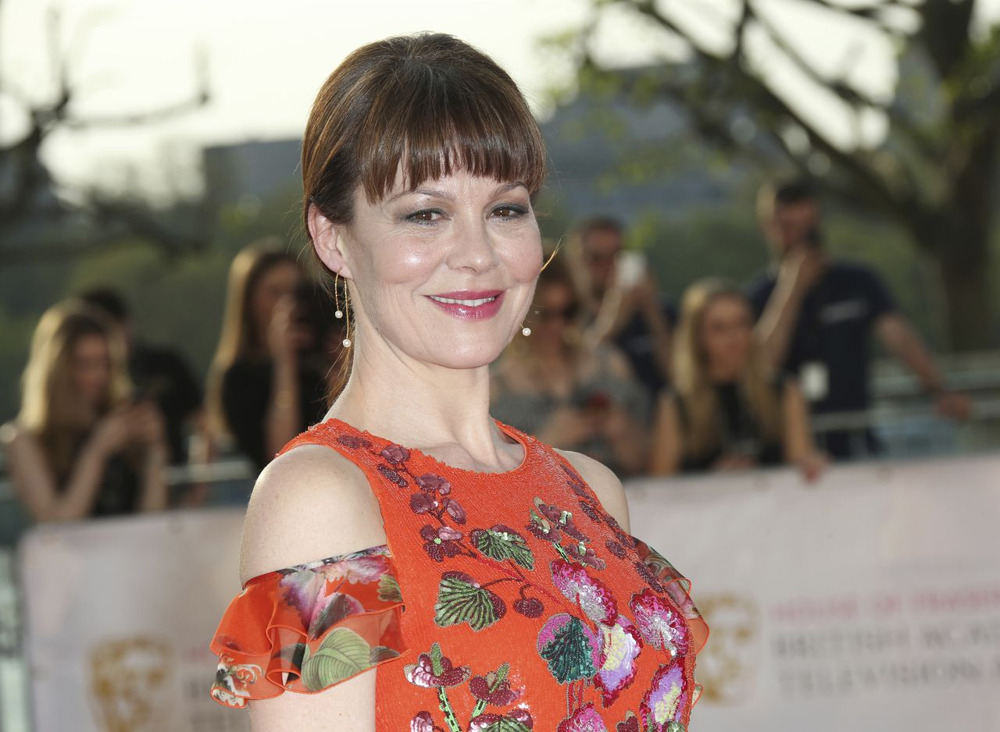

Thomas Shelbey (Cillian Murphy)
Murphy was born on 25 May 1976 in Douglas, Cork. His mother taught French while his father, Brendan,
worked for the Department of Education and Skills.[2] His grandfather, aunts, and uncles were also
teachers. He was raised in Ballintemple, Cork, alongside his younger brother Páidi and two younger
sisters Sile and Orla.[3][4] He started writing and performing songs at the age of 10.[5] He was
raised Catholic and attended the Catholic secondary school Presentation Brothers College, where he
did well academically but often got into trouble, sometimes being suspended; he decided in his
fourth year that misbehaving was not worth the hassle.[2] Not keen on sports, which was a major part
of the school's curriculum, he found that artistic pursuits were neglected at the school.[3]
Grace Shelbey (Annabelle Wallis)
Annabelle Wallis was born in Oxford, Oxfordshire, in England but she grew up in Cascais, Portugal.
Her mother is the niece of Richard Harris (Harry Potter), therefore, Annabelle is the cousin of
actors Jared Harris (Mad Men) and Jamie Harris and director Damian Harris. On her father's side, she
is related to Marie Lloyd, a music-hall singer in the early 1900s. Wallis started in 2005, in the
Bollywood movie Dil Jo Bhi Kahey and appeared in a few B movies before her breakthrough in 2009 as
queen Jane Seymour in Showtime's The Tudors, alongside Jonathan Rhys-Meyer. She appeared in X-Men:
First Class, Madonna's debut movie W.E: Wallis and Edouard and she also starred in the first and
only season of ABC's drama series Pan Am, alongside Margot Robbie.
Ada Shelbey (Sophie Rundle)
Sophie Rundle is an English actress. Born on 21 April 1988 to Fiona and Michael Rundle, she has two
brothers James and Henry. She attended the Bournemouth School for Girls before going on to the Royal
Academy of Dramatic Art, where she graduated in 2011 with a BA in Acting.Upon graduation, she
appeared in the period drama Garrow's Law (2009) and was part of the huge cast recreating the fate
of the passenger liner Titanic (2012), which aired on the 100th anniversary of the disaster. Most of
her appearances have been in dramas set in bygone days, from the 17th-century Jamestown (2017), the
post-war The Bletchley Circle (2012) and Call the Midwife (2012), and the 1920s gangster saga Peaky
Blinders (2013). She had contemporary roles in the sitcom Not Safe for Work (2015) and played the
brave young PC Kirsten McAskill in Happy Valley (2014).

Aunt Polly (Helen McCrory)
McCrory was born on 17 August 1968 in Paddington, London.[2][3] Her mother, Ann (née Morgans), is a
Welsh physiotherapist,[1] and her father, Iain McCrory (born 29 March 1940), is a diplomat from
Glasgow; they were married in 1974.[4] She was the eldest of three children.[5] She was educated at
Queenswood School near Hatfield, Hertfordshire,[6] and then spent a year living in Italy. Upon her
return to Britain, she began studying acting at the Drama Centre in London.[7][8] McCrory won third
prize at the Ian Charleson Awards for her 1993 performance as Rose Trelawny in Trelawny of the
'Wells' at the National Theatre.[9] In 2002, she was nominated for a London Evening Standard Theatre
Award for Best Actress (for playing Elena in Chekhov's Uncle Vanya at the Donmar Warehouse).[10]
Arthur Shelbey(Paul Anderson)
Anderson decided to pursue acting in the mid 2000s, after working for many years as a ticket
scalper and aspiring musician and enrolled at the Webber Douglas Academy of Dramatic Art. He began
his acting career by appearing in plays written by friend Gregory Burke, and made his screen debut
with the critically acclaimed 2014 film '71, written by Burke.[2] He had his first leading role in
the British movie of 2009, The Firm. Anderson's break came when, in 2013, he was cast as a main
character in the BBC Two show Peaky Blinders as Arthur Shelby, a gangster in post First World War
Birmingham. Since then, Anderson has appeared in many major films, including Ron Howard's In the
Heart of the Sea and The Revenant, as well as Brimstone, which was released in 2016.He loves pets
and has a puppy named Ray/ Bear.He grew up in a council estate. His mother had worked as a barmaid
in a pub. He found his interest in acting in 2000s, he has tried his hand in music as well.
John Shelbey(Joe Cole )
Cole's acting career began when he was accepted into the National Youth Theatre.[1] He obtained his
first roles in a one-night show in the West End,[2] on The Bill and Holby City, and then in roles on
stage at the Bush Theatre's sell-out School Season.[3] Cole has also penned a comedy series with
Matt Lucas.[1] He starred as John Shelby in the British historical crime drama Peaky Blinders. He
also played a part in a season 4 episode of Charlie Brooker's Black Mirror, earning a BAFTA
nomination for Best Actor. For his role as Billy Moore in A Prayer Before Dawn, Cole won Best Actor
at the 2018 British Independent Film Awards.
Finn Cole(Michael Shelbey)
Finlay Lewis J. Cole (born 9 November 1995) is an English actor from Kingston, London. He is known
for his role in the BBC series Peaky Blinders as Michael Gray. He is currently starring as Joshua
"J" Cody in TNT's Animal Kingdom, and played young Jakob Toretto in the film F9. As a child, Cole
wanted to work on boats like his father.[1] His older brother Joe is also an actor and helped Finn
get the audition for his first acting job.[2] In 2015, Finn appeared as Eric Birling in Helen
Edmundson's BBC One adaptation of An Inspector Calls.[3] Cole was born in London, the
second-youngest of five brothers.[1] One of his elder brothers is Joe Cole, whom he starred
alongside in Peaky Blinders.[4]
May Carleton(Charlotte Riley)
Riley was born in Grindon, County Durham.[3] She was brought up in County Durham and attended
Teesside High School from the age of 9 until 18.[4] She attended St Cuthbert's Society, Durham from
2000 to 2003, performing with the sketch comedy group, the Durham Revue[5] and in plays and musicals
and graduating with a degree in English and Linguistics; she also attended the London Academy of
Music and Dramatic Art from 2005 to 2007.[6n 2004, Riley won the Sunday Times' Playwriting Award for
Shaking Cecilia, which she co-wrote with Tiffany Wood.[7][8] In 2011, she played Anna in Helen
Edmundson's adaptation of Anna of the Five Towns on BBC Radio 4.[9] She appeared in Edge of
Tomorrow, starring Tom Cruise and Emily Blunt. She also appeared onstage at the Royal Court Theatre
production of The Priory, by Michael Wynne
Lizzie Stark( Natasha O'Keeffe)
Raised in Tooting, South London, O'Keeffe trained at the Royal Welsh College of Music and Drama, and
starred in a number of their stage productions.O'Keeffe first came to public attention in 2008,
playing a member of the Royal Family who enjoys parties, one night stands and drugs in the music
video for Falling Down,[1] the last single released by Oasis before the band dissolved. That same
year, she had a part in the feature film Abraham's Point. In 2010 and 2012, O'Keeffe played Sadie in
both seasons of BBC Three's drama series Lip Service, about a group of lesbians living in Glasgow,
Scotland. In 2012 and 2013 she played Abbey Smith in the lead ensemble for the final two seasons of
E4's comedy-drama Misfits, about a group of young offenders in a London community service program
who obtain supernatural powers.[2]
Esme Shelbey(Aimee-Ffion Edwards)
Aimee-Ffion Edwards was born in Newport, Wales. She attended Ysgol Gymraeg Casnewydd (Newport Welsh
medium primary school) and Ysgol Gyfun Gwynllyw. She played for a local youth rugby team, the only
girl in a boys' team, until she was 14. She would often go from ballet lessons to playing for the
rugby team.[2]She took a drama A-level at school, and joined the National Youth Theatre of
Wales.[3]She is fluent in English and Welsh. Edwards appeared in the 2002 short film Dŵr Dwfn.She
was training to be a classical singer when she appeared on the Pop Idol-type Welsh language TV show
called Wawffactor in 2006, finishing as runner-up.[Edwards made her television debut as the
character Sketch in the E4 series Skins in 2008. 2010, she appeared in an episode of the
supernatural BBC drama series Being Human as a theatre usher, who is also a ghost.